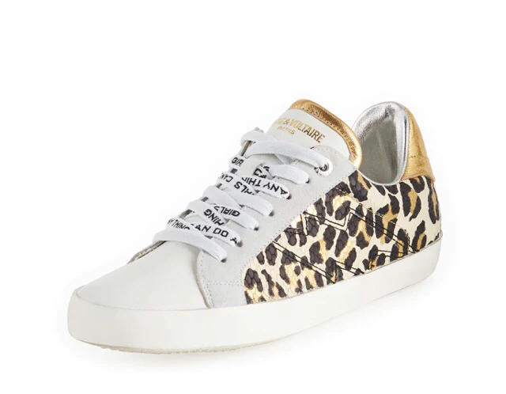

| Zadig | |
|---|---|
| inicio | productos |

|
|
| Nuestra primera responsabilidad y prioridad es ofrecer productos que sean duraderos, que puedan transmitirse y que tengan varias vidas. | |
|  |

|
El 90 % de las chaquetas de traje para mujer de Zadig&Voltaire se fabrican en Ucrania desde hace muchos años por su especialización y calidad en confección a medida. |
|
ig: @zadigvoltaire  
|
|